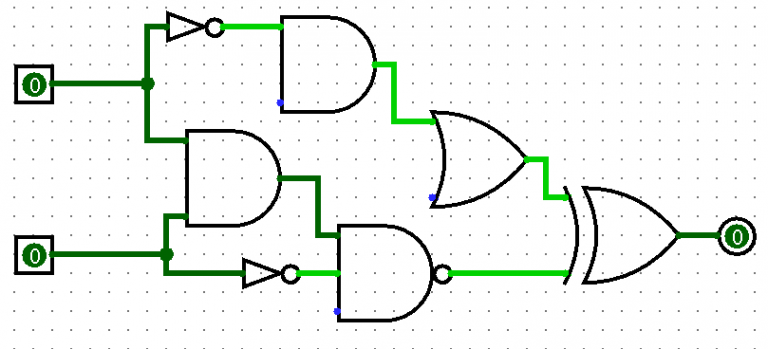

Algebra de Boole
A álgebra booleana foi desenvolvida pelo matemático inglês George Boole (1815 – 1864) para ser usada em estudos de lógica.
Foi apresentada pela primeira vez de forma completa em um trabalho de nome "As Leis do Pensamento”, publicado em 1854.
Na álgebra booleana, as constantes e variáveis podem ter apenas dois valores possíveis, 0 ou 1. E esses valores não representam realmente números,
mas o estado do nível de tensão de uma variável, o que chamamos de nível lógico. Então, o estado de um circuito digital pode ser nível lógico 0 ou 1. Como 0 sendo falso e 1 sendo verdadeiro.
Essa álgebra se baseia em três operações principais: conjunção (AND), disjunção (OR) e negação (NOT). A partir dessas operações básicas, é possível construir expressões mais complexas e derivar outras operações como NAND (Não AND), NOR (Não OR), XOR (ou exclusivo) e XNOR(Ou não exclusivo).

A Álgebra de Boole consiste em uma ferramenta matemática que nos permite descrever a relação entre as saídas de um circuito lógico e suas entradas por meio do uso de uma equação, também chamada de expressão booleana. Com a álgebra booleana também é possível simplificar a expressão booleana que determina um circuito, de modo que esse circuito possa ser reprojetado de forma mais simples, possivelmente usando uma quantidade menor de portas lógicas.
Na Álgebra de Boole, somente dois valores são permitidos: 0 ou 1. Damos o nome de variável booleana a uma quantidade que pode assumir esses valores lógicos, em momentos distintos.
Geralmente esses níveis lógicos (0 e 1) são usados para representar os níveis de tensão elétrica em um ponto do circuito. É comum, por exemplo, que valores de tensão entre 0 e 0,8V sejam considerados como um nível lógico baixo (0), e que valores entre 2,5 a 5V sejam considerados como nível lógico alto (1).
A álgebra de boole se vale de três operações básicas: as operações NOT, OR e AND. Por conta disso,
é considerada mais simples de trabalhar do que com a álgebra convencional, que faz uso de raízes, decimais, números negativos.
Operação OR (OU)
A operação OR é aquela que terá saída verdadeira se pelo menos um dos valores lógico for verdadeira.
Para entendermos melhor, vamos imaginar a situação em que temos uma lâmpada dentro de um microondas e ela deve ser acesa se a porta do microondas for aberto ou acabar a contagem regressiva dele esquentar a comida.
Ao fazer a combinação das duas entradas lógicas observamos que:
-
Se nem a porta for aberta e nem a contagem acabar a lâmpada não é acessa
- Se somente a contagem regressiva acabar;
- Se somente a porta for aberta a lâmpada é acesa;
- Se somente a porta for aberta a lâmpada é acesa e a contagem regressiva acabar
Operação AND (E)
A operação AND é aquela que terá saida verdadeira se e somente se os dois valores forem verdadeiros.
Para entendermos, vamos imaginar que uma maquina de lavar roupas só opera se apertar um botão e (AND) se a porta estiver fechada.
Ao fazermos a combinação das duas entradas lógicas observamos que:
- Se nem o botão for acionado e nem a porta estiver fechada a maquina não vai operar;
- Se somente o botão for acionado a maquina não irá ligar;
- Se somente a porta estiver fechada não irá ligar;
- Se o botão for acionado e a porta estiver fechada, a maquina irá ligar;
Operação NOT(NÃO)
A operação NOT é aquela que terá como saida o inverso da sua entrada.
Diferente das operações OR e AND, essa operação é realizada sobre uma única entrada. Então, se a variável A invertida, o resultado y pode ser escrito como:
Y = A
Todas as expressões indicam que o valor lógico de Y é o oposto do valor lógico de A.
-
Se A for falso, Y é verdadeiro;
-
Se A for verdadeiro, Y é falso;
Estrutura e Fundamentos
A Álgebra de Boole é estruturada em torno de um conjunto de axiomas e leis, a lei da associatividade, a lei da comutatividade, a lei do complemento, a lei da distributividade, entre outras. Essas leis garantem a consistência e a previsibilidade dos resultados das operações booleanas, permitindo a formulação e simplificação de expressões booleanas.
Lei da distributividade
A multiplicação de um número por uma soma é igual à soma das multiplicações desse número por cada uma das parcelas.
De acordo com a propriedade distributiva, 2 x (3 + 5) será igual a 2 x 3 + 2 x 5.
Vamos verificar se essa lei é correta.
2 x (3 + 5) = 2 x 8 = 16
2 x 3 + 2 x 5 = 6 + 10 = 16
O resultado de ambos foram 16, então a propriedade distributiva de multiplicação é demonstrada.
Lei da comutatividade
A lei comutativa é uma regra matematica que determina que a ordem em que multiplicamos os numeros não irá alterar o produto.
Lei do complemento
A soma consistindo de um elemento e o seu complemento é equivalente à classe universo. O produto consistindo de um elemento e seu complemento é equivalente à classe nulo. No exemplo abaixo temos uma imagem que ajuda a entender essa lei.
Complementação:
a + a' = 1
a x a' = 0